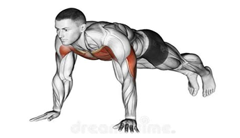

Push Day
1
Push Up - 3 set x 10-15

Push-up adalah latihan kekuatan tubuh bagian atas yang melatih otot dada, bahu, trisep, dan otot inti. Ini termasuk bodyweight exercise—jadi kamu nggak butuh alat tambahan, cukup lantai dan niat!
Otot yang dilatih:
- Dada (pectoralis major)
- Dada (pectoralis major)
- Dada (pectoralis major)
- Dada (pectoralis major)
Cara Melakukan Push-Up yang Benar:
- Posisi Awal:
- Letakkan tangan di lantai, selebar bahu.
- Kaki lurus ke belakang, tumpuan pada ujung jari kaki.
- Tubuh membentuk garis lurus dari kepala sampai tumit (core kencang!).
- Turunkan Badan:
- Tekuk siku perlahan, turunkan dada menuju lantai.
- Jaga agar siku mengarah ke belakang, bukan ke samping.
- Jangan sampai pinggul turun duluan—jaga tubuh tetap lurus.
- Dorong Kembali:
- Dorong tubuh ke atas sampai lengan lurus kembali.
- Itu dihitung 1 repetisi.